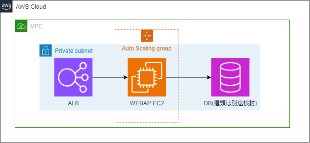
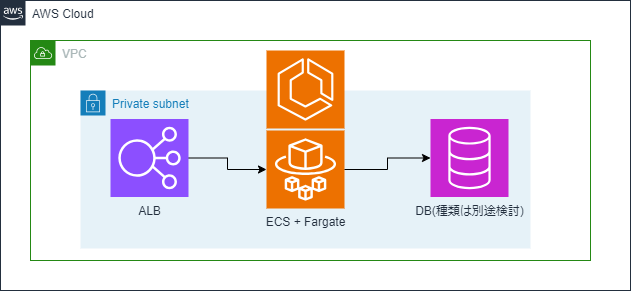
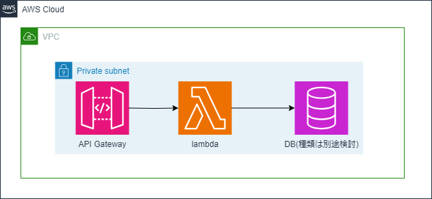

活動状況¶
2023/11/09時点の状況¶
前回記載した次回までのToDO¶
1.TERASOLUNAチュートリアルを通じてjavaの学習を行う。
→あまり時間取れず。
チュートリアルそのままだとバージョン差異などで環境エラーが多発している。
少しずつ進めていたが、断念して「Hello World」から始めることとした。
https://kuramochiku.github.io/md/spring.html#intellij-idea
2.AWSに特化したテーマの再検討(～11月末)
→再検討を実施した。3月までのテーマとしては別途追加する予定であるが、直近としては以下としたいと考えている。
直近のテーマと選定理由(～12月)¶
EC2/ECS/サーバレスの使い分け整理。現プロジェクトの最適構成検討。
EC2とサーバレスの違いは分かるが、EC2とECSの使い分けについて自分の言葉で説明できない。
実際にECSを扱ってみることで、使い分け方を整理したい。
※コンテナの方が良いといったイメージがあるが、オーバーヘッドもあるため、EC2オートスケーリングとの優位性が分からない。
本検証に伴う構築、設定変更はcloudformationを利用して行う方針とする。
cloudformationを扱ったことがなく、プロジェクトでも利用出来ていないためである。
想定構成図¶
EC2の構成図

ECSの構成図

サーバレスの構成図

評価観点¶
・構築時に必要な作業(工数)
・設定変更に必要な作業(工数)
・ランニングコスト(通常時、コスト削減方法のバリエーション)
・拡張性
・冗長性(リリース時の影響)
・セキュリティ担保
・監視
・ログ管理
・開発者の責任範囲
・その他
3.上記を進めるためCloudformationを学習中。VPC、サブネット、ルートテーブルまでは作成。
困っていること¶
業務多忙です。。。しばらくは状況悪化する可能性の方が高いです。
次回までのToDO¶
1.CloudformationでEC2環境の構築